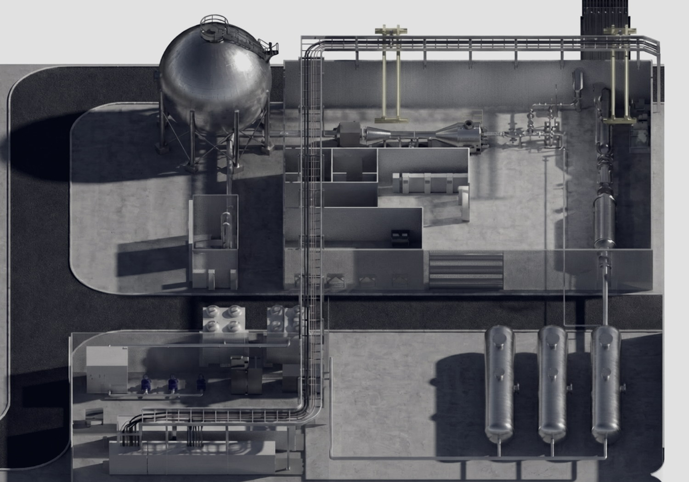
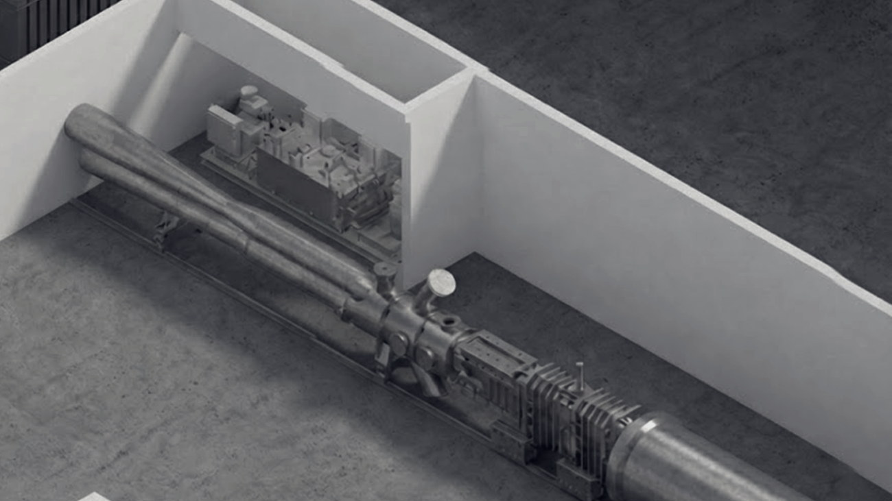
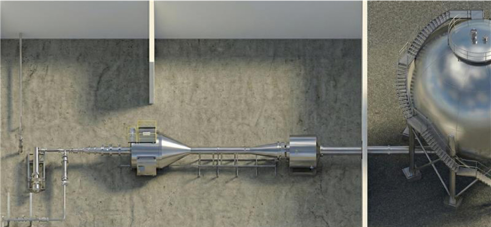
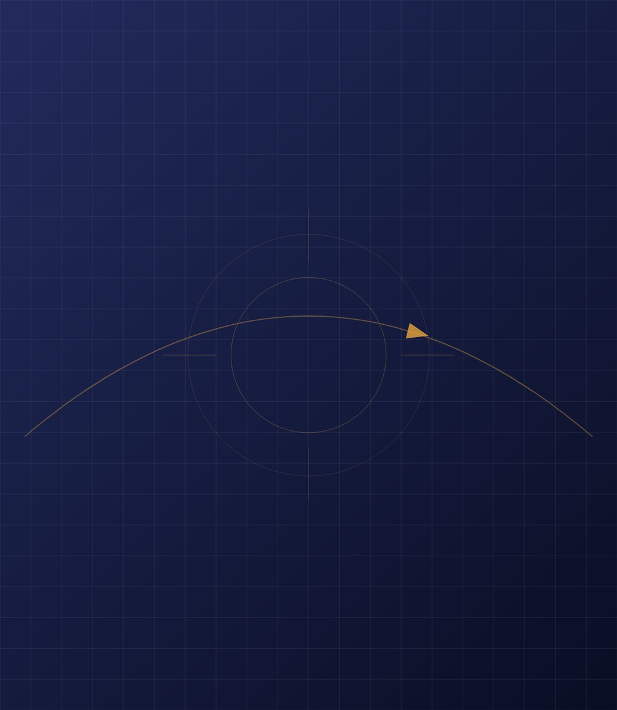
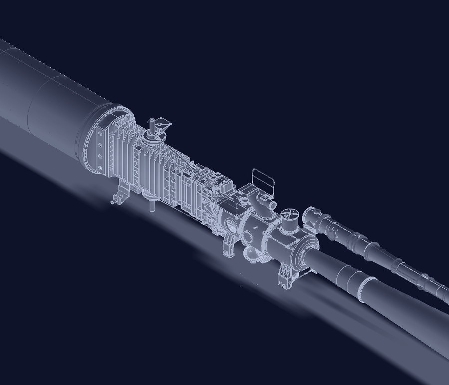
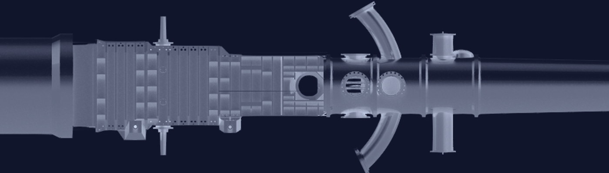
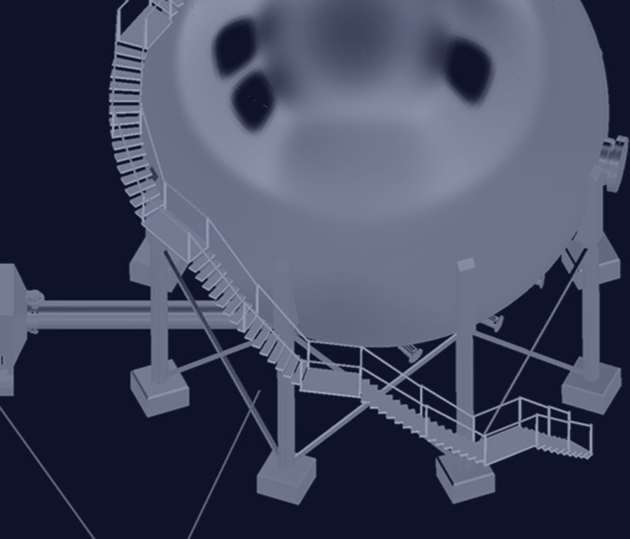
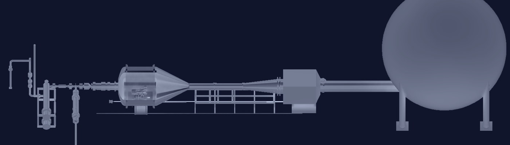

KOEN
Aerospace Integrated Wind Tunnel Center
서울대학교 우주항공 통합 풍동센터는 다양한 속도 영역의 고난이도 공기역학 환경을 지상에서 재현합니다.
국가 우주개발 사업과 우주방산 산업체의 시험을 지원합니다.
Overview
센터는 고아음속·천음속·초음속 유동환경을 구현하는 삼중음속 풍동장치(마하 0.5~3 급)와
극초음속 풍동장치(마하 7 급)로 구성됩니다.
이를 기반으로 연구개발과 성능시험을 수행합니다.

다양한 속도 영역의 고난이도 공기역학 환경을 지상에서 재현하기 위한 통합 풍동 시험장치를 제작·설치.

불어내기식으로 정체압력 1~9.8 atm, 질량유량 60~200kg/s 조건에서 마하수 0.5~3급 이상의 공력 시험을 최대 60초 유지할 수 있는 장치 구축

전기히터 가열식 불어내기 방식으로 전압력 10~24 atm, 질량유량 1~2.9 kg/s 조건에서 마하 7급 공력시험을 최대 30초 유지 가능한 장치 구축

도판 준비 중2단 경가스 발사기로 Ø12.7 mm 탄도에서 모형을 최대 4 km/s까지 가속해, 지지대 없는 자유비행 조건의 공력을 계측합니다. 발사부 8 m, 시험부 4.5 m.
Facilities
접혀 있는 설비 이름을 누르면 해당 설비가 펼쳐집니다.



아음속·천음속·초음속의 삼중 속도 영역을 모사합니다. 가변 노즐 실시간 제어로 마하수를 연속 가변하며, 압력·힘·진동 등 주요 공력 데이터를 획득합니다.
3D 모형 불러오는 중


M5 이상의 비행 환경을 지상에서 모사합니다. 전기히터 가열식 불어내기 방식이며, 발사체의 공력현상과 우주탐사선의 하강·착륙 시 발생하는 비행안정성 문제를 연구합니다.
3D 모형 불러오는 중
현장 도판 준비 중
Facility 03
2단 경가스 발사기로 모형을 가속해 천음속·초음속·극초음속 자유비행 공력 실험을 수행합니다. 비행체 후류 유동 계측과 쉴리렌 유동 가시화가 가능합니다.
Figures
AEROSPACE INTEGRATED WIND TUNNEL
Location
(15011) 경기도 시흥시 서울대학로 173
서울대학교 시흥캠퍼스